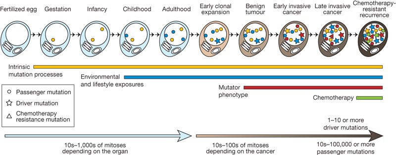

Variant Effect Predictor (VEP)
A Practical Introduction
2025-12-12
Somatic vs Germline
- A germline mutation is inherited by the individual from birth. They can be oncogenic (ie Rb = retinoblastoma)
- A somatic mutation, or acquired mutation, happens in somatic cells instead of germ cells and will not pass to offspring (ie TP53).
.png)
How do mutations appear?
- Mutations occur due to replication errors (1 nucleotide per ~10^4) but with reparation mechanisms (1 error per 10^7 - 10^9)
- As a consequence of DNA damage (~70,000 nucleotide lesions or modifications per day)
- Exposure to mutagens such as UV, smoking increases the mutations’ frequency

Can the cell repair them?
Yes, there are many mechanisms of DNA repair. Some of the most common are:
NER (Nucleotide Excision Repair): Repairs bulky lesions such as thymine dimers caused by UV radiation. This mechanism involves the removal of a short single-stranded DNA segment containing the damage, followed by DNA synthesis using the complementary strand as a template.
MMR (Mismatch Repair): Fixes replication errors such as base mismatches or insertion/deletion loops. MMR recognizes the newly synthesized strand and corrects errors by removing the incorrect nucleotides and replacing them.
BER (Base Excision Repair): Repairs single-base lesions such as oxidative damage, alkylation, or deamination. This involves the removal of damaged bases by specific glycosylases, followed by the excision of the resulting abasic site.
HR (Homologous Recombination): Repairs double-strand breaks using a homologous sequence as a template, typically from a sister chromatid. This is an error-free repair mechanism.
NHEJ (Non-Homologous End Joining): Repairs double-strand breaks without the need for a homologous template. While quicker, this method is error-prone and can lead to insertions or deletions.
Visualizing DNA Repair Mechanisms
Acquisition of mutation in cancer
Figure 3: Cancer somatic mutations, The cancer genome, Stratton et al, 2009
Concept of driver mutation
Some mutations are more important than others for tumor progression. Perhaps they are more disruptive and detrimental for the cell to harbor. Those can be observed in multiple cancer types (think of TP53 or BRCA1/2).
Not all the driver mutations are known and not all the driver mutations are really always drivers.
What Defines a Driver Mutation?
Not all mutations are driving the tumorigenesis!
Functional Impact:
- Driver mutations confer a selective growth advantage to cells, promoting tumor development and progression. These mutations often affect genes regulating cell cycle, apoptosis, DNA repair, and immune evasion.
- Example pathways: MAPK, PI3K/AKT, and WNT signaling.
Recurrent Patterns Across Tumors:
- Frequently observed across different cancer types (e.g., TP53 in over 50% of cancers).
- Some drivers are specific to tissue types (e.g., EGFR in lung cancer, KIT in gastrointestinal stromal tumors, IDH1 in gliomas).
Types of Driver Mutations
- Oncogenes:
- Gain-of-function mutations in genes like KRAS, BRAF, and EGFR drive tumor growth by promoting uncontrolled cell division or survival.
- Tumor Suppressors:
- Loss-of-function mutations in genes like TP53, RB1, and PTEN impair cellular mechanisms that prevent tumor formation.
- Mutator Genes:
- Mutations in genes like MLH1 or MSH2 lead to genomic instability, enabling the accumulation of additional mutations.
How can we identify what’s a mutation’s role?
- Can we somehow quantify its importance?
VEP (Variant Effect Predictor)
(a) Ensembl-VEP
What is VEP?
- 2010: The first version of VEP was introduced as part of the Ensembl project.
- 2012-2015 Functional prediction scores were introduced.
- 2017 Other databases are now part of the VEP, such as COSMIC, ClinVar, gnomAD. The tool was made more generalizable and personalizable with the addition of VEP’s plugin feature.
- VEP is 100% written in perl VEP Github
Important Annotation Databases
Cancer-Specific Resources
COSMIC (Catalogue of Somatic Mutations in Cancer)
| Field | Content |
|---|---|
| Purpose | Somatic mutations in cancer |
| Example | COSV59384583; OCCURENCE=1(skin) |
| Interpretation | Mutation seen in skin cancer; frequency indicates driver likelihood |
ClinVar (Clinical Variant Database)
| Field | Content |
|---|---|
| Purpose | Clinical significance assessment |
| Example | Pathogenic/Likely_pathogenic |
| Interpretation | Strong evidence for disease causation |
Population & Prediction Resources
gnomAD (Genome Aggregation Database)
| Field | Content |
|---|---|
| Purpose | Population allele frequency |
| Example | AF=0.00001 |
| Interpretation | Very rare (<0.01% frequency) |
AlphaMissense
| Field | Content |
|---|---|
| Purpose | AI-predicted functional impact |
| Example | likely_pathogenic |
| Interpretation | Model predicts damaging effect |
Filtering Strategy
Combine databases for variant prioritization:
- gnomAD AF < 0.01 → Filters common variants
- COSMIC presence → Supports somatic driver role
- ClinVar pathogenic → Clinical validation
- AlphaMissense → Functional prediction for novel variants
What Does VEP Do?
The Challenge: Imagine annotating thousands of variants manually - searching databases, reviewing literature, interpreting functional impact. This would take weeks and be highly error-prone.
VEP automates annotation to accelerate discovery:
- Annotates genomic variants (somatic and germline)
- Predicts functional consequences
- Integrates multiple databases (COSMIC, ClinVar, gnomAD, etc.)
- Essential for cancer genomics and clinical applications
What VEP Does NOT Do
VEP is powerful, but it’s not magic:
- Does NOT call variants - requires pre-called VCF input
- Does NOT guarantee accuracy - annotation quality depends on input quality
- Does NOT replace human judgment - false positives/negatives require expert review
Remember: Automation simplifies the process, but critical thinking and validation remain essential!
What is not well understood?
There are no databases investigating those aspects of biology that might play an important role in the cancer development. After all it is estimated that >97% of all the mutations are “passenger events” and they do not have direct impact on the tumor growth.
- The effects of epigenetic changes
- Glycosilations
- Transposomes (like LINE-1)
- SV (inversion for example)
- Alternative splicing impacts
- Non-coding RNAs and their alterations
- Tumor Microenvironment
- Microbiome
- Etc.
In summary: Why do we use VEP?
We can answer questions like:
- How damaging is a certain somatic mutation?
- What is the impact in a particular cancer type?
- Is the mutation known for that cancer?
- Are there therapeutic implications?
Variant Annotation with VEP
VEP: Transcript Selection & Priority
The Challenge: A single variant can have 4-12+ annotations due to multiple transcript isoforms. Which one matters?
1. Handling Transcripts
VEP options to simplify output when a gene has multiple transcripts:
--pick: One consequence per variant (Best for simple filtering)--pick_allele: One per variant allele--per_gene: One per gene--flag_pick: Flags the “chosen” one but keeps others--pick_allele_gene: Most comprehensive filtering
Selection hierarchy:
- Canonical transcript (MANE Select for human)
- Protein coding biotype
- Most severe consequence
- Longest transcript
2. Consequence Severity
Top 10 Most Severe:
- Transcript ablation
- Splice acceptor/donor variant
- Stop gained (Nonsense)
- Frameshift variant
- Stop lost
- Start lost
- Transcript amplification
- Inframe insertion/deletion
- Missense variant
- Protein altering variant
Cancer examples:
- HIGH impact: TP53 frameshift → TSG loss
- MODERATE impact: KRAS p.G12D → oncogene gain
Practical Tip
For clinical reporting, use --pick with --transcript_version to ensure reproducibility. Always document which transcript was used.
VEP Impact Categories

| Impact | Description | Examples |
|---|---|---|
| HIGH | Disruptive. Likely loss of function. | Frameshift, Stop Gained, Splice acceptor/donor. |
| MODERATE | Non-disruptive change to protein. | Missense, In-frame indel. |
| LOW | Unlikely to change function. | Synonymous, Splice region (non-canonical). |
| MODIFIER | Non-coding / Regulatory. | Intronic, UTRs, Intergenic. |
Important Exceptions
Not all HIGH impact = pathogenic
Not all MODERATE impact = benign (e.g., IDH1 p.R132H is LOW but a critical driver mutation)
Always consider biological context!
PolyPhen-2 Score
Purpose: Predicts if a missense mutation is damaging based on protein structure and evolutionary conservation.
Scoring Categories:
- Probably Damaging (> 0.85)
- High confidence functional effect.
- Possibly Damaging (0.15 - 0.85)
- Moderate confidence effect.
- Benign (< 0.15)
- Likely no phenotypic effect.
Usage
PolyPhen-2 is specific to human proteins.
It should be used in conjunction with other tools (like SIFT) to build a consensus on missense variant interpretation.
SIFT Score
Purpose: Predicts if an amino acid substitution is deleterious based on sequence conservation across species.
Scoring Categories:
- Deleterious (≤ 0.05)
- Substitution at highly conserved position
- High confidence damaging effect
- Tolerated (> 0.05)
- Substitution at variable position
- Likely benign or neutral effect
Note: Lower scores = More damaging (opposite to PolyPhen-2!)
Usage
SIFT is available for 10 species in Ensembl (including human, mouse, zebrafish).
All possible amino acid substitutions are pre-calculated, making annotation very fast.
Use in combination with PolyPhen-2 for consensus prediction.
Interpretation Guide
| SIFT | PolyPhen-2 | Confidence |
|---|---|---|
| Deleterious | Probably Damaging | High - prioritize |
| Tolerated | Benign | High - likely benign |
| Deleterious | Benign | Mixed - manual review |
| Tolerated | Damaging | Mixed - manual review |
VEP Plugins
Essential plugins for cancer analysis:
REVEL
REVEL paper: An Ensemble Method for Predicting the Pathogenicity of Rare Missense Variants
You can download here the data (~6.5GB): https://sites.google.com/site/revelgenomics/downloads or https://zenodo.org/records/7072866
Prepare for GRCh38
Usage:
AlphaMissense
AlphaMissense’s Paper: Accurate proteome-wide missense variant effect prediction with AlphaMissense
Prepare for GRCh38
Run it with VEP
dbNSFP
dbNSFP v4 paper: a comprehensive database of transcript-specific functional predictions and annotations for human nonsynonymous and splice-site SNVs
A VEP plugin that retrieves data for missense variants from a tabix-indexed dbNSFP file.
Prepare the data
Prepare for GRCh38
Run it with VEP
Filter Variants with VEP
You can use the tool that is included in the VEP’s suite of tools. This tool generally works very well with data that have been VEP-annotated
Filter SIFT deleterious events
Can be used with pipes, for example (might save memory)
Operators:
is: Exact matchmatch: Regex pattern<,>,<=,>=: Numeric comparisonin: List membershipand,or: Combine conditions
Example 1: High-confidence damaging
Notes
There are many other plugins that can be used depending on the context and the specific biological question at hand. You can have a look here: Plugins for VEP
You can run multiple plugins at the same time
The more plugins the more computationally expensive it could become
There is a nice
helpincluded in VEP that can be useful for consultation
Best Practices
Quality Control
- Filter low-quality variants before annotation
- Use matched normal samples when available
- Consider sequencing artifacts
- Document filtering criteria
- Use IGV for confirmation
Annotation Strategy
- Use multiple prediction algorithms
- Consider tissue-specific expression
- Include population frequencies
- Add clinical annotations
- Follow standardized guidelines
Points to keep in mind
Include MODERATE impact variants
- HIGH impact often affects tumor suppressors (TP53, PTEN, RB1)
- MODERATE impact often affects oncogenes (KRAS, BRAF, PIK3CA)
- Examples: KRAS p.G12D, BRAF p.V600E are MODERATE but critical drivers
Many drivers remain unknown
- Only ~500-600 cancer genes well-characterized
- Absence from databases ≠ passenger mutation
- Look for recurrent mutations across samples
CNV calling limitations
- Particularly challenging in WES (only 2% of genome covered)
- Requires adequate tumor purity (>40% ideal) and coverage
- VEP is not specialized for CNV annotation (CNVannotator, ClassifyCNV)
No Tool is Perfect
Always validate important findings visually (IGV) and consider orthogonal methods for clinical decisions.
Resources
Useful Links
Questions?
Feel free to drop a line in the chat or to contact us.
Contact Information
- VEP Support: https://www.ensembl.org/Help/Contact
- Documentation: http://www.ensembl.org/info/docs/tools/vep/
- GitHub: https://github.com/Ensembl/ensembl-vep
- Bioconductor: https://bioconductor.org/
Exercises

Giphy

Cancer Variant Analysis - SIB